General Result Test
Hasil dari keempat tes dirangkum dalam 2 kategori besar keputusan :
- Theoretical Result
- Psikogram Result
Semua hasil tes didapat dari kerangka acuan yang sudah tersimpan di dalam sistem ini, bahkan And abisa menetapkan sendiri, kerangka acuan terdiri dari :
- Job Profile F-1
- Cognitive Model A-1
- Typical Competency A-2
- Competency Fit Analysis T-3 )Khusus penilaian DISC)
Theoritical Result
Kerangka acuan untuk pengkategorian level pekerjaan. Model acuan yang saling berhubungan adalah :
- Cognitive Model A-1
- Typical Competency A-2
Cognitive Model A-1
Titik penilaian terpusat pada :
- Pembelajaran lewat tulisan
- Pengertian dan pemecahan masalah
- Numerical
- Retrevial dan aplikasi
- Spartial orientation
Typical Competency A-2
Kerangka acuan diri sendiri terhadap orang lain Terdiri dari 3 pokok penilaian :
- Competency fit deals with business
- Competency fit deals with people
- Competency fit deals with self management
Competency Fit Analysis T-3
Kerangka acuan untuk penilaian DISC
Gambar Theoritical Result
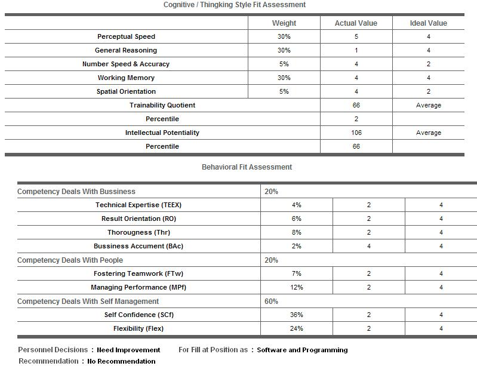
Psikogram Result
Psikogram ini dibuat agar proses penilaian lebih mudah dipahami
 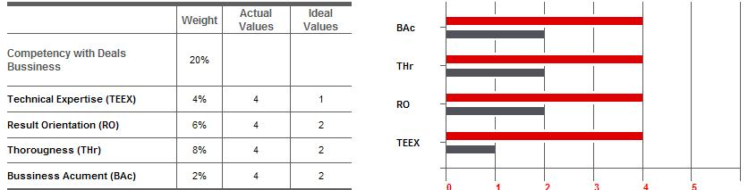
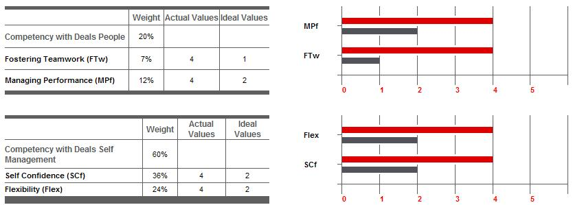
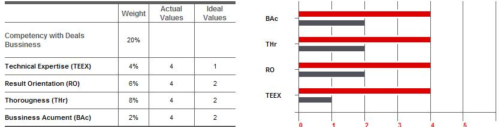
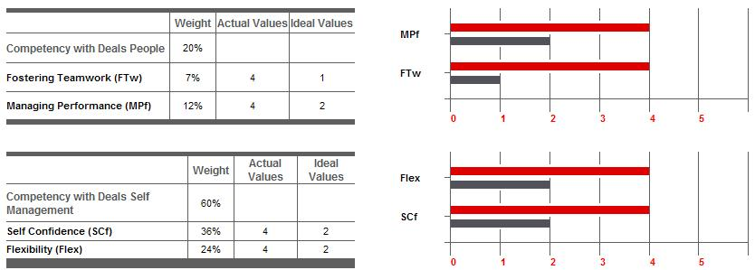
Level Job Profile
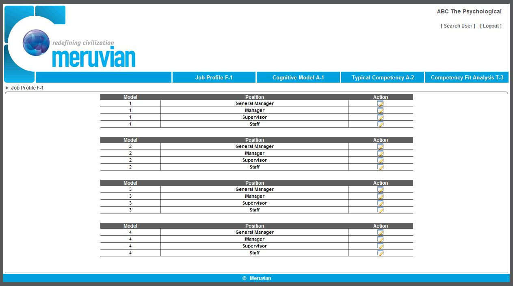
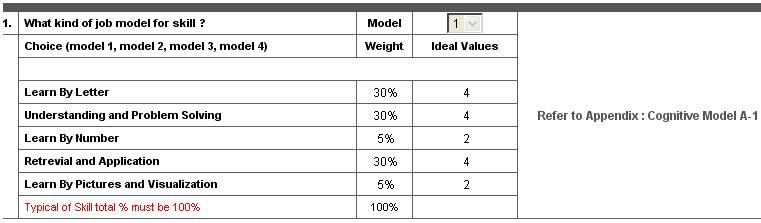
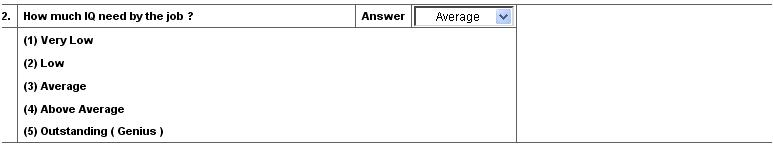
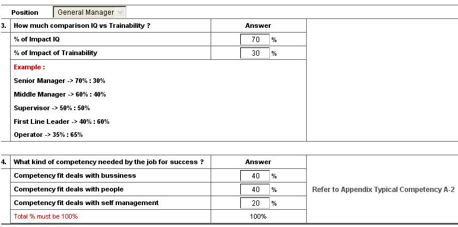
Typical Competency A-2
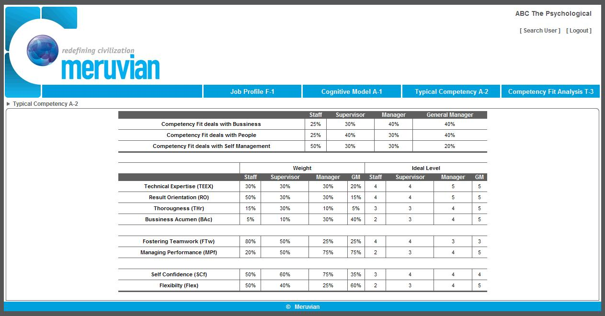
Competency Fit Analysis T-3
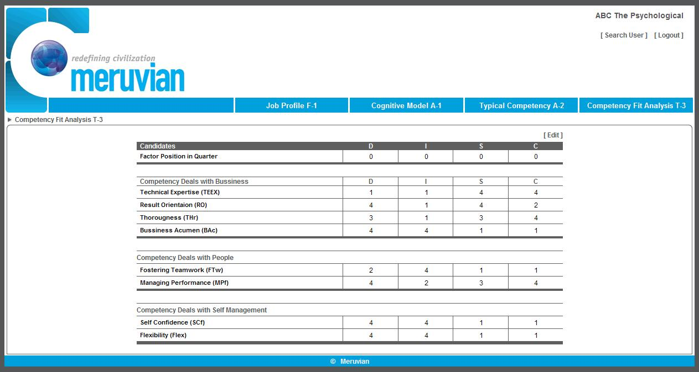